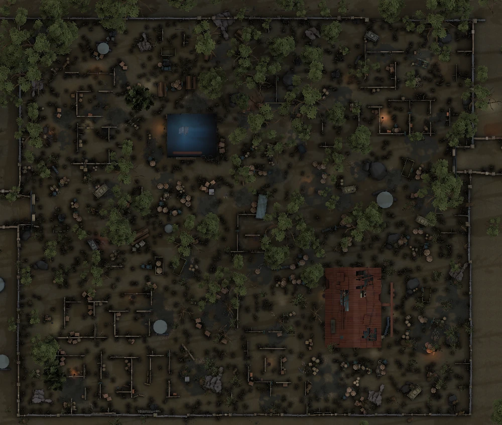

密码机记录
圆形为密码机：点击切换状态，长按约半秒确认无机。正方形为地窖：每次点击依次切换“未知 → 无地窖（×）→ 有地窖（实心）→ 未知”。状态保存在本机浏览器。
当前地图
军工厂
圣心医院
红教堂
湖景村
月亮河公园
里奥的回忆
不归林
唐人街
永眠镇
可能刷新
×
确认无机（长按）
确认存在
正在破译
快破译完
破译完成
地窖未知
×
确认无地窖
确认有地窖
图标大小
20 px
可能点位显示绿色中心点
显示密码机别称
显示地窖
分布推测
正在读取候选点…
还有
—
台机子的位置无法推测
地窖推测
撤销
重做
一键 Apply：推测必有 → 白色
自动 Apply 推测必有
重置本局
